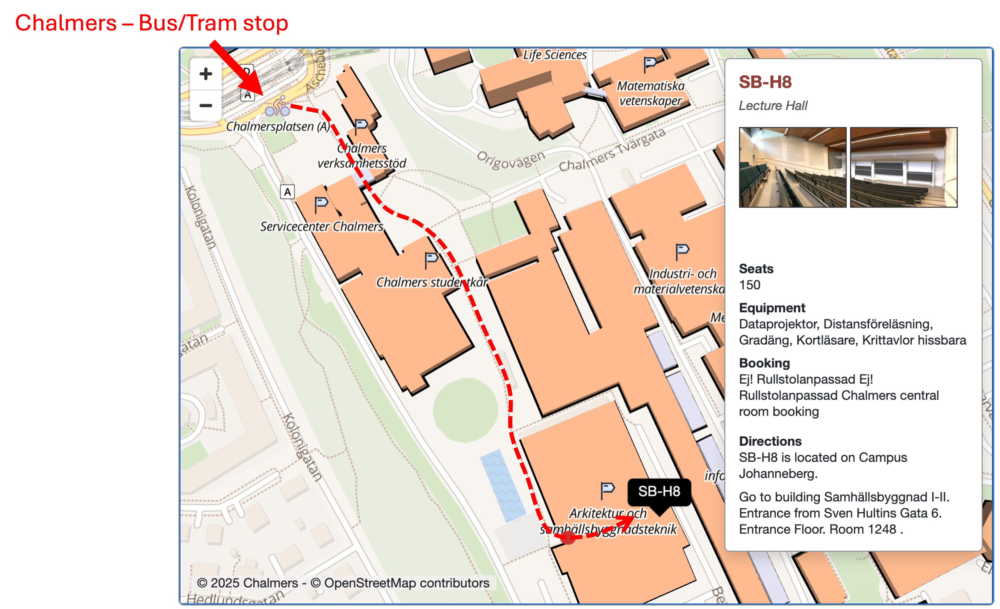
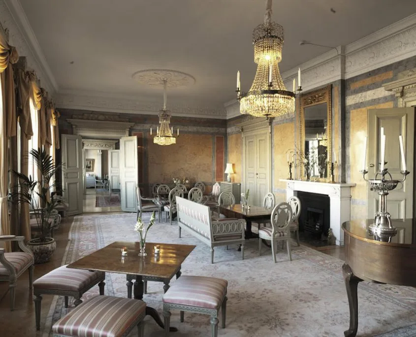
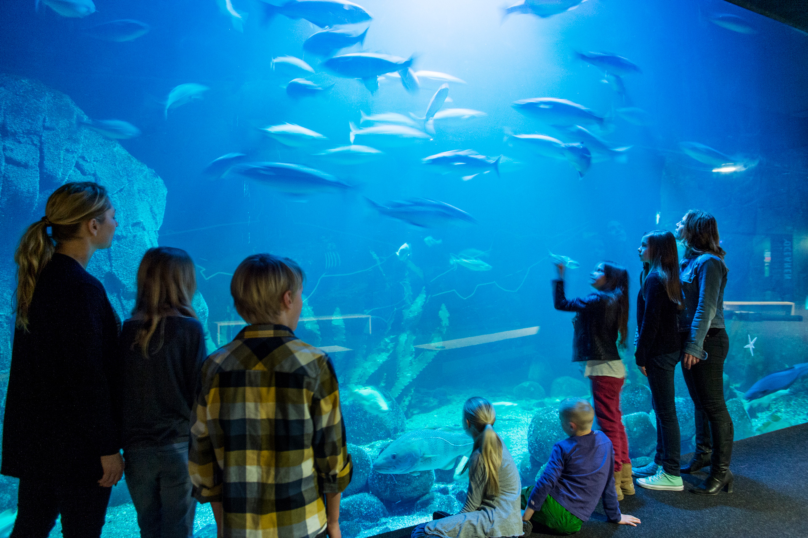

Overview of Chalmers University of Technology
Chalmers University of Technology (Swedish: Chalmers tekniska högskola, commonly referred to as
Chalmers) is located in Gothenburg, Sweden, and focuses on engineering and science, but more broadly it
also conducts research and offers education in shipping, architecture and management.
Chalmers was founded in 1829. The university was run as a private institution until 1937 when it became
the second state-owned technical university. In 1994 the government of Sweden reorganised Chalmers into
a private company owned by a government-controlled foundation. Chalmers is one of only three
universities in Sweden which are named after a person, the other two being Karolinska Institutet and
Linnaeus University.

Conference Facilities
The conference will be held in the Samhällsbyggnad I-II (Arkitektur) building. The main entrance is located here:
All sessions will be held in room SB-H8:
Connecting to the internet
Eudoroam is available for all of you who have access to it. Additionally, you can get login information for an alternative network at the registration desk.
Reception
The reception will be hosted at the Chalmersska Huset:
Chalmersska Huset is located here:
Reaching Chalmersska Huset
To reach Chalmersska Huset from Chalmers, once the last session is over, there are several options. Among those: you can take bus 16 from Chalmers (stop C) and get off at Domkyrkan. The trip takes around 10 minutes, plus another 10 minutes for walking. Alternatively, you can take trams 7 or 10 (stop A) to Brunnsparken. The travelling and walking time are similar. If you prefer to walk, that will take approximately 25 minutes.
Gala Dinner
The Gala Dinner will be hosted at the Universeum:
Universeum is located here:
Reaching the Universeum
To reach the Universeum from Chalmers, once the last session is over, there are several options. Among those: you can take trams 6 or 8 (stop A) to Korsvägen. If you prefer to walk, that will take approximately 15 minutes.
Travel Information
Reaching Gothenburg
By plane:
- Gothenburg Landvetter Airport is conveniently located close to the center. For more travel information visit https://www.swedavia.com/landvetter/
- From Landvetter airport to the city center:
- Airport buses - Flygbussarna
- It takes approximately 30 minutes to travel between the Landvetter airport and the city center.
- The bus stop by the central station is called “Nils Ericson Terminalen (Göteborg C)”.
- You always buy the cheapest ticket online in advance on the Flygbussarna website or in the Flygbussarna app. You can also buy the ticket in a ticket machine or on board the bus (card payment only, no cash).
- For up-to-date information on prices and options please visit www.flygbussarna.se
- Airport Taxi
- Costs approximately SEK 500-600 to/from Landvetter Airport. Ask for a fixed price!
- The driver should have a taxi ID card clearly displayed in the vehicle. Service is included in the taximeter price. Avoid unlicensed taxis.
- We recommend:
- Taxi Göteborg: +46 (0)31 650 00
- Taxi Kurir: +46 (0)31 27 27 27
- Airport buses - Flygbussarna
By train:
- Gothenburg Central Station is the hub for the city's rail and bus traffic.
- You can find the train connections on:
- SJ Swedish railways: www.sj.se
- MTR Express: https://vrresa.se
- Exit the train at the central station/the Nils Ericson terminal. To reach Chalmers, take bus 16 (Destination: Högsbohöjd) from Nordstan outside the terminal or take tram 13 (Destination: Sahlgrenska) from Drottningstorget just outside the central station. Alternatively, there are additional tram lines from Brunnsparken, approximately 500 meters from the central station. Please visit Västtrafik for details.
Transportation to the venue: Chalmers (Campus Johanneberg)
By Tram or Bus:
- Address: Chalmersplatsen 1, Gothenburg
- Closest bus/tram stop: Chalmers
- Please visit Västtrafik for details.
Getting around town
- You can buy a day card or 3 day card ticket in most convenience stores such as Pressbyrån, 7-eleven etc.
- You can pay with credit card on the trams but not on the bus (then you have to buy a ticket in advance).
- Please note that cash is NOT accepted in buses or trams. Credit card is accepted as payment method on trams and the airport-bus. For buses, you need to pre-buy your ticket in a convenience store.
- Please visit https://www.goteborg.com/en/guides/getting-around-town for more
information.